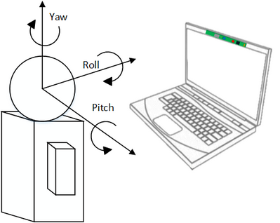

Face Pose Data [F200] |
Top Previous Next |
|
If you enable pose detection (PXC[M]FaceConfiguration.pose.IsEnabled=true), you can use the QueryPose function to retrieve any detected pose data, which includes the following information:
 19: Face Euler Angles Illustration
Example 47 illustrates the steps to retrieve the face pose data. C++ Example 47: Retrieve Pose Estimation Data
C# Example 47: Retrieve Pose Estimation Data
Java Example 47: Retrieve Pose Estimation Data
|